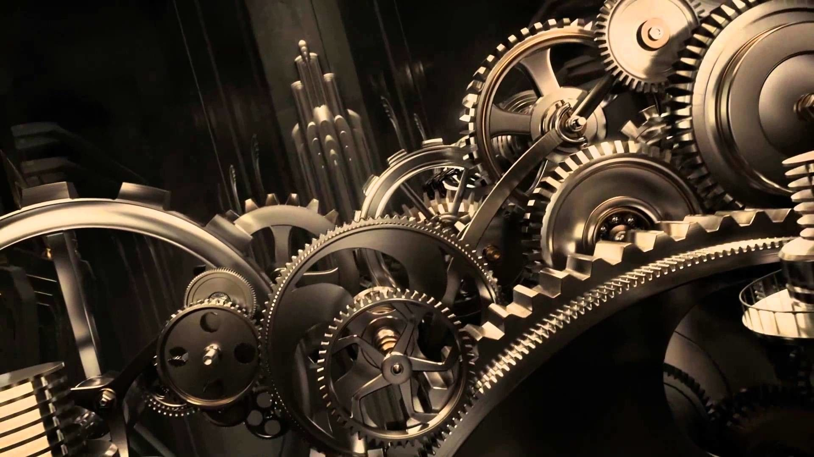
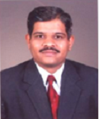

The Department of Mechanical Engineering was started in the year 2005 with an intake of 25.
The department has well equipped state of the art laboratories with advanced software’s.
The department has highly dedicated & qualified faculties with good blend of experience from both Academics
and Industry.
Majority of faculties are with Doctoral Degrees in Mechanical Engineering having rich teaching experience.
Within a span of short period the department
has reached ‘Center of Excellence’ by having an MOU with several industries, attaining good academic
results, conducting several seminars, conferences,
workshops, Industrial visits, FDPs, Industry – Institute Interactions at State & National levels.
Currently the Department offers M.Tech program in Thermal Power Engineering, Product Design and
Manufacturing, Industrial automation and engineering,
Computer Aided Engineering, Machine Design Engineering, Doctoral Degree in Mechanical engineering & M.Sc.
(Engg.) by Research Program affiliated to
Visvesvaraya Technological University (VTU) Belgaum, Karnataka”, through its four regional centers located
at Belagavi, Mysuru, Kalaburagi and Muddenahalli.
The Mechanical Engineering Department has Center of Excellence (COE) in Light Weight Materials Manufacturing
and Testing at VTU Muddenahalli.
CHAIRPERSON

Dr Ravindra R Malagi
Professor and Chairperson
Department of Mechanical Engineering
Machhe, VTU-Belagavi-590018
Mail:- chairman_mech@vtu.ac.in
Contact:-0831- 2498251, 2498198